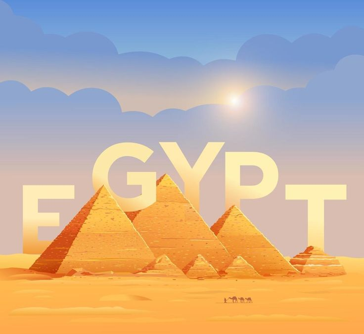

Nestled in the northeastern corner of Africa, Egypt is a captivating blend of ancient marvels and modern wonders. From the iconic pyramids of Giza to the bustling streets of Cairo, Egypt's landscape is a testament to its rich history, vibrant culture, and economic dynamism.
Egypt's history is a tapestry woven with the threads of pharaohs, dynasties, and cultural evolution. The Great Pyramids of Giza, standing as silent witnesses to bygone eras, reflect the architectural brilliance of ancient civilizations. Hieroglyph-covered temples and the Valley of the Kings provide glimpses into the lives of those who once ruled the Nile.
Egypt's allure extends beyond its historical landmarks to a thriving tourism sector. The bustling bazaars of Khan El Khalili, the majestic Sphinx, and the treasures housed in the Egyptian Museum are magnets for travelers. Cruising the Nile or exploring the temples of Luxor, each experience unveils a new layer of Egypt's timeless charm.
While history echoes in every corner, Egypt's modern identity is also shaped by its passion for sports. Football, or soccer, stands as a national obsession, with the Egyptian national team a source of pride. The fervor of fans during matches in Cairo's stadiums is a testament to the unity and spirit that sports bring to the nation.
Amidst historical treasures and sporting events, Egypt's economy thrives as a dynamic force. The Suez Canal, a vital waterway connecting the Mediterranean and Red Seas, plays a pivotal role in global trade. Tourism, agriculture along the Nile, and a growing industrial sector contribute to Egypt's economic vibrancy, reflecting a nation confidently striding into the future.
In conclusion, Egypt's narrative unfolds across the sands of time, blending ancient echoes with the pulse of contemporary life. Whether delving into history, exploring tourist gems, cheering in sports arenas, or navigating economic horizons, Egypt remains a captivating destination that seamlessly merges the old and the new.